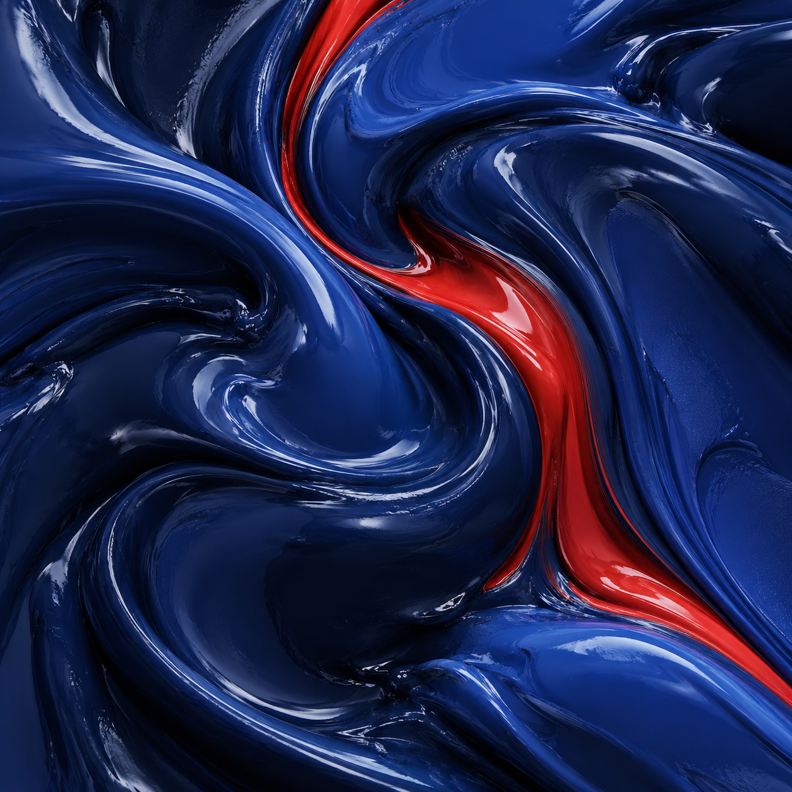

Принимаем ваш эталон
Деталь, выкрас или жидкий образец эмали. Согласуем, с чем будем сравнивать результат.
Завод в Ярославле · Работаем с предприятиями
Изготовим акриловые и алкидные материалы по вашему цветовому эталону — для производства, оборудования и техники.
От небольшой партии до регулярных поставок.

*Срок зависит от материала, цвета и объёма. Разработка и доработка рецептуры согласуются отдельно.
Подберём материал под поверхность, технологию нанесения и условия эксплуатации.
Производство и ремонт
Для ворот, ограждений и металлических конструкций. Согласуем цвет по образцу и требования к покрытию для вашей технологии окраски.
Что важно указать в запросе
Металл и его подготовка, уличная или внутренняя эксплуатация, способ нанесения, цвет и объём партии.
Обсудить эту задачуВозможность применения подтверждаем после рассмотрения задачи. Для железнодорожной техники рассматриваем ремонтные работы; требования к допускам и сертификации проверяются отдельно.
Начнём с задачи, чтобы выбрать подходящий материал, а затем согласуем цвет и партию.
Акриловые эмали для окраски изделий, оборудования и техники. Подбор системы с учётом поверхности и способа нанесения.
Алкидные эмали для согласованных производственных и ремонтных задач. Цвет по вашему эталону, объём под потребность предприятия.
Обсудим совместимые грунтовки, разбавители и отвердители. Комплектацию подбираем под выбранную эмаль.
Буклеты и каталоги заводаВажно не только получить нужный оттенок один раз. Важно, чтобы следующие поставки соответствовали согласованному цветовому эталону и качественным показателям.
Деталь, выкрас или жидкий образец эмали. Согласуем, с чем будем сравнивать результат.
Делаем выкрас и сопоставляем его с образцом с учётом согласованных условий нанесения.
Используем визуальный и приборный контроль. Требования и допустимые отклонения согласуем для заказа.
Собственная исследовательская лаборатория
Технологическая работа с материалом и цветом
Передайте нам отдельную стадию или производство материала по согласованной технологии.
Работаем с сырьём заказчика. Возможен и выпуск из наших материалов — условия, рецептуру и объём согласуем индивидуально.
Обсудить производствоИзготовление полуфабрикатов и отдельных компонентов на нашем оборудовании.
Обсудим переработку, доработку материала и фасовку под вашу производственную задачу.
Определим состав работ, требования к сырью, технологический режим и контроль результата.
Завод, с которым можно работать напрямую
Производим лакокрасочные материалы с 2007 года. У нас есть собственные производственные мощности, исследовательская лаборатория и специалисты, которые работают с рецептурой и цветом.
Можно начать с готового технического задания или просто рассказать, что нужно окрасить.
Что окрашиваете, каким способом и какой объём нужен.
Уточним требования, цветовой эталон и параметры покрытия.
Обсудим стоимость, срок изготовления и условия поставки.
Выпустим материал по согласованным условиям заказа.
Перед первым заказом
Ориентир для изготовления в нужный цвет — от 120 кг. Объём и возможность выпуска конкретного материала согласуем при рассмотрении заявки.
Это начальный срок для освоенных материалов. Он зависит от рецептуры, цвета, объёма и текущего производства. Для разработки или доработки материала срок определяем отдельно.
Да, в качестве эталона можно передать деталь, выкрас или жидкий образец эмали. Возможность воспроизведения конкретного цвета и требования к совпадению согласуем до заказа.
Опишите изделие, поверхность, условия эксплуатации и способ нанесения. Укажите желаемый цвет и объём. Этого достаточно, чтобы начать предметное обсуждение.
Выберите в форме цель «Техническое описание» и укажите интересующий материал. Если он ещё не выбран, опишите задачу — обсудим подходящий вариант и его документацию.
Да, обсуждаем работу по давальческой схеме. Для расчёта потребуются сведения о сырье, рецептуре, технологических операциях, объёме и требованиях к готовому материалу.
Опишите задачу или подготовьте техническое задание. Обсудим материал, цвет, объём и сроки.
+7 (4852) 58-76-54sales@volgakraski.ruМожно сразу написать в отдел продаж.
Файл с ТЗ прикрепите к письму.
Отдел продаж